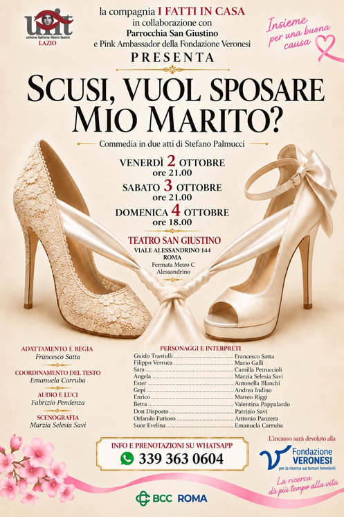

Una storia costruita sul palcoscenico
La storia de I FATTI IN CASA è fatta di prove, spettacoli, trasferte, incontri e soprattutto persone.
Negli anni la compagnia ha portato avanti produzioni teatrali con particolare attenzione alla commedia, costruendo ogni spettacolo attraverso il lavoro collettivo di attori, regia, tecnici e collaboratori.
Questa pagina crescerà insieme alla nostra storia: raccoglieremo qui le produzioni, le fotografie, i teatri, le tournée e i momenti che hanno accompagnato il percorso della compagnia.
I nostri spettacoli

Scusi, vuol sposare mio marito?
Una commedia della compagnia I FATTI IN CASA APS.
SCOPRI LO SPETTACOLO →